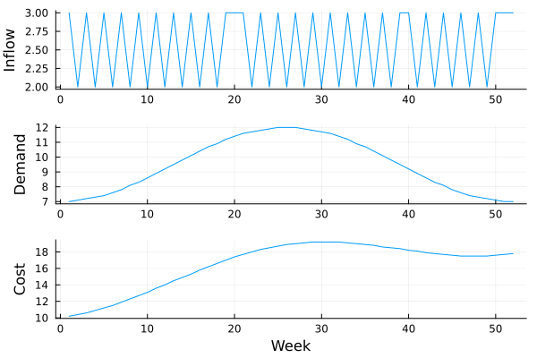
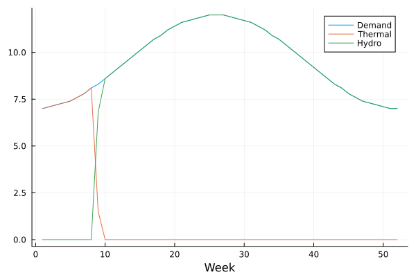
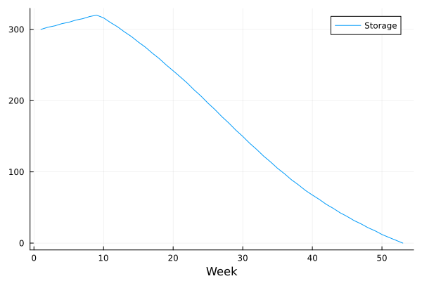
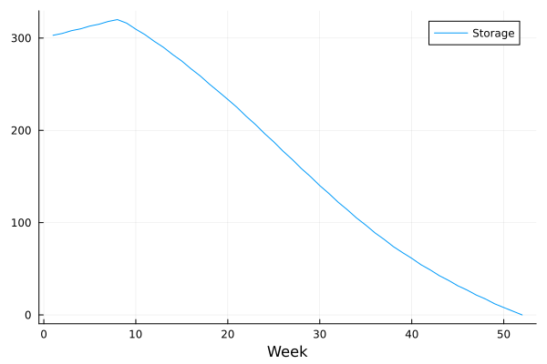
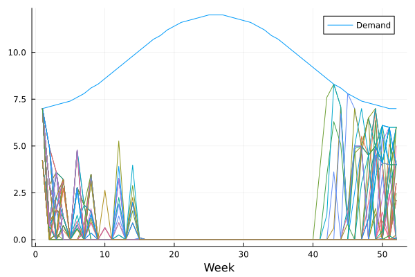
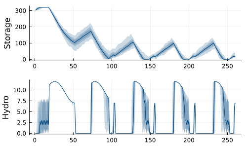

Example: deterministic to stochastic
This tutorial was generated using Literate.jl. Download the source as a .jl file. Download the source as a .ipynb file.
The purpose of this tutorial is to explain how we can go from a deterministic time-staged optimal control model in JuMP to a multistage stochastic optimization model in SDDP.jl. As a motivating problem, we consider the hydro-thermal problem with a single reservoir.
Packages
This tutorial requires the following packages:
using JuMPusing SDDPimport CSVimport DataFramesimport HiGHSimport PlotsData
First, we need some data for the problem. For this tutorial, we'll write CSV files to a temporary directory from Julia. If you have an existing file, you could change the filename to point to that instead.
dir = mktempdir()filename = joinpath(dir, "example_reservoir.csv")"/tmp/jl_HjJeCT/example_reservoir.csv"Here is the data
csv_data = """week,inflow,demand,cost1,3,7,10.2\n2,2,7.1,10.4\n3,3,7.2,10.6\n4,2,7.3,10.9\n5,3,7.4,11.2\n6,2,7.6,11.5\n7,3,7.8,11.9\n8,2,8.1,12.3\n9,3,8.3,12.7\n10,2,8.6,13.1\n11,3,8.9,13.6\n12,2,9.2,14\n13,3,9.5,14.5\n14,2,9.8,14.9\n15,3,10.1,15.3\n16,2,10.4,15.8\n17,3,10.7,16.2\n18,2,10.9,16.6\n19,3,11.2,17\n20,3,11.4,17.4\n21,3,11.6,17.7\n22,2,11.7,18\n23,3,11.8,18.3\n24,2,11.9,18.5\n25,3,12,18.7\n26,2,12,18.9\n27,3,12,19\n28,2,11.9,19.1\n29,3,11.8,19.2\n30,2,11.7,19.2\n31,3,11.6,19.2\n32,2,11.4,19.2\n33,3,11.2,19.1\n34,2,10.9,19\n35,3,10.7,18.9\n36,2,10.4,18.8\n37,3,10.1,18.6\n38,2,9.8,18.5\n39,3,9.5,18.4\n40,3,9.2,18.2\n41,2,8.9,18.1\n42,3,8.6,17.9\n43,2,8.3,17.8\n44,3,8.1,17.7\n45,2,7.8,17.6\n46,3,7.6,17.5\n47,2,7.4,17.5\n48,3,7.3,17.5\n49,2,7.2,17.5\n50,3,7.1,17.6\n51,3,7,17.7\n52,3,7,17.8\n"""write(filename, csv_data);And here we read it into a DataFrame:
data = CSV.read(filename, DataFrames.DataFrame)| Row | week | inflow | demand | cost |
|---|---|---|---|---|
| Int64 | Int64 | Float64 | Float64 | |
| 1 | 1 | 3 | 7.0 | 10.2 |
| 2 | 2 | 2 | 7.1 | 10.4 |
| 3 | 3 | 3 | 7.2 | 10.6 |
| 4 | 4 | 2 | 7.3 | 10.9 |
| 5 | 5 | 3 | 7.4 | 11.2 |
| 6 | 6 | 2 | 7.6 | 11.5 |
| 7 | 7 | 3 | 7.8 | 11.9 |
| 8 | 8 | 2 | 8.1 | 12.3 |
| 9 | 9 | 3 | 8.3 | 12.7 |
| 10 | 10 | 2 | 8.6 | 13.1 |
| 11 | 11 | 3 | 8.9 | 13.6 |
| 12 | 12 | 2 | 9.2 | 14.0 |
| 13 | 13 | 3 | 9.5 | 14.5 |
| 14 | 14 | 2 | 9.8 | 14.9 |
| 15 | 15 | 3 | 10.1 | 15.3 |
| 16 | 16 | 2 | 10.4 | 15.8 |
| 17 | 17 | 3 | 10.7 | 16.2 |
| 18 | 18 | 2 | 10.9 | 16.6 |
| 19 | 19 | 3 | 11.2 | 17.0 |
| 20 | 20 | 3 | 11.4 | 17.4 |
| 21 | 21 | 3 | 11.6 | 17.7 |
| 22 | 22 | 2 | 11.7 | 18.0 |
| 23 | 23 | 3 | 11.8 | 18.3 |
| 24 | 24 | 2 | 11.9 | 18.5 |
| 25 | 25 | 3 | 12.0 | 18.7 |
| 26 | 26 | 2 | 12.0 | 18.9 |
| 27 | 27 | 3 | 12.0 | 19.0 |
| 28 | 28 | 2 | 11.9 | 19.1 |
| 29 | 29 | 3 | 11.8 | 19.2 |
| 30 | 30 | 2 | 11.7 | 19.2 |
| 31 | 31 | 3 | 11.6 | 19.2 |
| 32 | 32 | 2 | 11.4 | 19.2 |
| 33 | 33 | 3 | 11.2 | 19.1 |
| 34 | 34 | 2 | 10.9 | 19.0 |
| 35 | 35 | 3 | 10.7 | 18.9 |
| 36 | 36 | 2 | 10.4 | 18.8 |
| 37 | 37 | 3 | 10.1 | 18.6 |
| 38 | 38 | 2 | 9.8 | 18.5 |
| 39 | 39 | 3 | 9.5 | 18.4 |
| 40 | 40 | 3 | 9.2 | 18.2 |
| 41 | 41 | 2 | 8.9 | 18.1 |
| 42 | 42 | 3 | 8.6 | 17.9 |
| 43 | 43 | 2 | 8.3 | 17.8 |
| 44 | 44 | 3 | 8.1 | 17.7 |
| 45 | 45 | 2 | 7.8 | 17.6 |
| 46 | 46 | 3 | 7.6 | 17.5 |
| 47 | 47 | 2 | 7.4 | 17.5 |
| 48 | 48 | 3 | 7.3 | 17.5 |
| 49 | 49 | 2 | 7.2 | 17.5 |
| 50 | 50 | 3 | 7.1 | 17.6 |
| 51 | 51 | 3 | 7.0 | 17.7 |
| 52 | 52 | 3 | 7.0 | 17.8 |
It's easier to visualize the data if we plot it:
Plots.plot( Plots.plot(data[!, :inflow]; ylabel = "Inflow"), Plots.plot(data[!, :demand]; ylabel = "Demand"), Plots.plot(data[!, :cost]; ylabel = "Cost", xlabel = "Week"); layout = (3, 1), legend = false,)
The number of weeks will be useful later:
T = size(data, 1)52Deterministic JuMP model
To start, we construct a deterministic model in pure JuMP.
Create a JuMP model, using HiGHS as the optimizer:
model = Model(HiGHS.Optimizer)set_silent(model)x_storage[t]: the amount of water in the reservoir at the start of stage t:
reservoir_max = 320.0@variable(model, 0 <= x_storage[1:(T+1)] <= reservoir_max)53-element Vector{VariableRef}:
x_storage[1]
x_storage[2]
x_storage[3]
x_storage[4]
x_storage[5]
x_storage[6]
x_storage[7]
x_storage[8]
x_storage[9]
x_storage[10]
⋮
x_storage[45]
x_storage[46]
x_storage[47]
x_storage[48]
x_storage[49]
x_storage[50]
x_storage[51]
x_storage[52]
x_storage[53]We need an initial condition for x_storage[1]. Fix it to 300 units:
reservoir_initial = 300fix(x_storage[1], reservoir_initial; force = true)u_flow[t]: the amount of water to flow through the turbine in stage t:
flow_max = 12@variable(model, 0 <= u_flow[1:T] <= flow_max)52-element Vector{VariableRef}:
u_flow[1]
u_flow[2]
u_flow[3]
u_flow[4]
u_flow[5]
u_flow[6]
u_flow[7]
u_flow[8]
u_flow[9]
u_flow[10]
⋮
u_flow[44]
u_flow[45]
u_flow[46]
u_flow[47]
u_flow[48]
u_flow[49]
u_flow[50]
u_flow[51]
u_flow[52]u_spill[t]: the amount of water to spill from the reservoir in stage t, bypassing the turbine:
@variable(model, 0 <= u_spill[1:T])52-element Vector{VariableRef}:
u_spill[1]
u_spill[2]
u_spill[3]
u_spill[4]
u_spill[5]
u_spill[6]
u_spill[7]
u_spill[8]
u_spill[9]
u_spill[10]
⋮
u_spill[44]
u_spill[45]
u_spill[46]
u_spill[47]
u_spill[48]
u_spill[49]
u_spill[50]
u_spill[51]
u_spill[52]u_thermal[t]: the amount of thermal generation in stage t:
@variable(model, 0 <= u_thermal[1:T])52-element Vector{VariableRef}:
u_thermal[1]
u_thermal[2]
u_thermal[3]
u_thermal[4]
u_thermal[5]
u_thermal[6]
u_thermal[7]
u_thermal[8]
u_thermal[9]
u_thermal[10]
⋮
u_thermal[44]
u_thermal[45]
u_thermal[46]
u_thermal[47]
u_thermal[48]
u_thermal[49]
u_thermal[50]
u_thermal[51]
u_thermal[52]ω_inflow[t]: the amount of inflow to the reservoir in stage t:
@variable(model, ω_inflow[1:T])52-element Vector{VariableRef}:
ω_inflow[1]
ω_inflow[2]
ω_inflow[3]
ω_inflow[4]
ω_inflow[5]
ω_inflow[6]
ω_inflow[7]
ω_inflow[8]
ω_inflow[9]
ω_inflow[10]
⋮
ω_inflow[44]
ω_inflow[45]
ω_inflow[46]
ω_inflow[47]
ω_inflow[48]
ω_inflow[49]
ω_inflow[50]
ω_inflow[51]
ω_inflow[52]For this model, our inflow is fixed, so we fix it to the data we have:
for t in 1:T fix(ω_inflow[t], data[t, :inflow])endThe water balance constraint says that the water in the reservoir at the start of stage t+1 is the water in the reservoir at the start of stage t, less the amount flowed through the turbine, u_flow[t], less the amount spilled, u_spill[t], plus the amount of inflow, ω_inflow[t], into the reservoir:
@constraint( model, [t in 1:T], x_storage[t+1] == x_storage[t] - u_flow[t] - u_spill[t] + ω_inflow[t],)52-element Vector{ConstraintRef{Model, MathOptInterface.ConstraintIndex{MathOptInterface.ScalarAffineFunction{Float64}, MathOptInterface.EqualTo{Float64}}, ScalarShape}}:
-x_storage[1] + x_storage[2] + u_flow[1] + u_spill[1] - ω_inflow[1] = 0
-x_storage[2] + x_storage[3] + u_flow[2] + u_spill[2] - ω_inflow[2] = 0
-x_storage[3] + x_storage[4] + u_flow[3] + u_spill[3] - ω_inflow[3] = 0
-x_storage[4] + x_storage[5] + u_flow[4] + u_spill[4] - ω_inflow[4] = 0
-x_storage[5] + x_storage[6] + u_flow[5] + u_spill[5] - ω_inflow[5] = 0
-x_storage[6] + x_storage[7] + u_flow[6] + u_spill[6] - ω_inflow[6] = 0
-x_storage[7] + x_storage[8] + u_flow[7] + u_spill[7] - ω_inflow[7] = 0
-x_storage[8] + x_storage[9] + u_flow[8] + u_spill[8] - ω_inflow[8] = 0
-x_storage[9] + x_storage[10] + u_flow[9] + u_spill[9] - ω_inflow[9] = 0
-x_storage[10] + x_storage[11] + u_flow[10] + u_spill[10] - ω_inflow[10] = 0
⋮
-x_storage[44] + x_storage[45] + u_flow[44] + u_spill[44] - ω_inflow[44] = 0
-x_storage[45] + x_storage[46] + u_flow[45] + u_spill[45] - ω_inflow[45] = 0
-x_storage[46] + x_storage[47] + u_flow[46] + u_spill[46] - ω_inflow[46] = 0
-x_storage[47] + x_storage[48] + u_flow[47] + u_spill[47] - ω_inflow[47] = 0
-x_storage[48] + x_storage[49] + u_flow[48] + u_spill[48] - ω_inflow[48] = 0
-x_storage[49] + x_storage[50] + u_flow[49] + u_spill[49] - ω_inflow[49] = 0
-x_storage[50] + x_storage[51] + u_flow[50] + u_spill[50] - ω_inflow[50] = 0
-x_storage[51] + x_storage[52] + u_flow[51] + u_spill[51] - ω_inflow[51] = 0
-x_storage[52] + x_storage[53] + u_flow[52] + u_spill[52] - ω_inflow[52] = 0We also need a supply = demand constraint. In practice, the units of this would be in MWh, and there would be a conversion factor between the amount of water flowing through the turbine and the power output. To simplify, we assume that power and water have the same units, so that one "unit" of demand is equal to one "unit" of the reservoir x_storage[t]:
@constraint(model, [t in 1:T], u_flow[t] + u_thermal[t] == data[t, :demand])52-element Vector{ConstraintRef{Model, MathOptInterface.ConstraintIndex{MathOptInterface.ScalarAffineFunction{Float64}, MathOptInterface.EqualTo{Float64}}, ScalarShape}}:
u_flow[1] + u_thermal[1] = 7
u_flow[2] + u_thermal[2] = 7.1
u_flow[3] + u_thermal[3] = 7.2
u_flow[4] + u_thermal[4] = 7.3
u_flow[5] + u_thermal[5] = 7.4
u_flow[6] + u_thermal[6] = 7.6
u_flow[7] + u_thermal[7] = 7.8
u_flow[8] + u_thermal[8] = 8.1
u_flow[9] + u_thermal[9] = 8.3
u_flow[10] + u_thermal[10] = 8.6
⋮
u_flow[44] + u_thermal[44] = 8.1
u_flow[45] + u_thermal[45] = 7.8
u_flow[46] + u_thermal[46] = 7.6
u_flow[47] + u_thermal[47] = 7.4
u_flow[48] + u_thermal[48] = 7.3
u_flow[49] + u_thermal[49] = 7.2
u_flow[50] + u_thermal[50] = 7.1
u_flow[51] + u_thermal[51] = 7
u_flow[52] + u_thermal[52] = 7Our objective is to minimize the cost of thermal generation:
@objective(model, Min, sum(data[t, :cost] * u_thermal[t] for t in 1:T))\[ 10.2 u\_thermal_{1} + 10.4 u\_thermal_{2} + 10.6 u\_thermal_{3} + 10.9 u\_thermal_{4} + 11.2 u\_thermal_{5} + 11.5 u\_thermal_{6} + 11.9 u\_thermal_{7} + 12.3 u\_thermal_{8} + 12.7 u\_thermal_{9} + 13.1 u\_thermal_{10} + 13.6 u\_thermal_{11} + 14 u\_thermal_{12} + 14.5 u\_thermal_{13} + 14.9 u\_thermal_{14} + 15.3 u\_thermal_{15} + 15.8 u\_thermal_{16} + 16.2 u\_thermal_{17} + 16.6 u\_thermal_{18} + 17 u\_thermal_{19} + 17.4 u\_thermal_{20} + 17.7 u\_thermal_{21} + 18 u\_thermal_{22} + 18.3 u\_thermal_{23} + 18.5 u\_thermal_{24} + 18.7 u\_thermal_{25} + 18.9 u\_thermal_{26} + 19 u\_thermal_{27} + 19.1 u\_thermal_{28} + 19.2 u\_thermal_{29} + 19.2 u\_thermal_{30} + 19.2 u\_thermal_{31} + 19.2 u\_thermal_{32} + 19.1 u\_thermal_{33} + 19 u\_thermal_{34} + 18.9 u\_thermal_{35} + 18.8 u\_thermal_{36} + 18.6 u\_thermal_{37} + 18.5 u\_thermal_{38} + 18.4 u\_thermal_{39} + 18.2 u\_thermal_{40} + 18.1 u\_thermal_{41} + 17.9 u\_thermal_{42} + 17.8 u\_thermal_{43} + 17.7 u\_thermal_{44} + 17.6 u\_thermal_{45} + 17.5 u\_thermal_{46} + 17.5 u\_thermal_{47} + 17.5 u\_thermal_{48} + 17.5 u\_thermal_{49} + 17.6 u\_thermal_{50} + 17.7 u\_thermal_{51} + 17.8 u\_thermal_{52} \]
Let's optimize and check the solution
optimize!(model)solution_summary(model)solution_summary(; result = 1, verbose = false)
├ solver_name : HiGHS
├ Termination
│ ├ termination_status : OPTIMAL
│ ├ result_count : 1
│ ├ raw_status : kHighsModelStatusOptimal
│ └ objective_bound : 6.82910e+02
├ Solution (result = 1)
│ ├ primal_status : FEASIBLE_POINT
│ ├ dual_status : FEASIBLE_POINT
│ ├ objective_value : 6.82910e+02
│ ├ dual_objective_value : 6.82910e+02
│ └ relative_gap : 5.32717e-15
└ Work counters
├ solve_time (sec) : 1.35875e-03
├ simplex_iterations : 53
├ barrier_iterations : 0
└ node_count : -1The total cost is:
objective_value(model)682.9099999999999Here's a plot of demand and generation:
Plots.plot(data[!, :demand]; label = "Demand", xlabel = "Week")Plots.plot!(value.(u_thermal); label = "Thermal")Plots.plot!(value.(u_flow); label = "Hydro")
And here's the storage over time:
Plots.plot(value.(x_storage); label = "Storage", xlabel = "Week")
Deterministic SDDP model
For the next step, we show how to decompose our JuMP model into SDDP.jl. It should obtain the same solution.
model = SDDP.LinearPolicyGraph(; stages = T, sense = :Min, lower_bound = 0.0, optimizer = HiGHS.Optimizer,) do sp, t @variable( sp, 0 <= x_storage <= reservoir_max, SDDP.State, initial_value = reservoir_initial, ) @variable(sp, 0 <= u_flow <= flow_max) @variable(sp, 0 <= u_thermal) @variable(sp, 0 <= u_spill) @variable(sp, ω_inflow) fix(ω_inflow, data[t, :inflow]) @constraint(sp, x_storage.out == x_storage.in - u_flow - u_spill + ω_inflow) @constraint(sp, u_flow + u_thermal == data[t, :demand]) @stageobjective(sp, data[t, :cost] * u_thermal) returnendA policy graph with 52 nodes.
Node indices: 1, ..., 52
Can you see how the JuMP model maps to this syntax? We have created a SDDP.LinearPolicyGraph with T stages, we're minimizing, and we're using HiGHS.Optimizer as the optimizer.
A few bits might be non-obvious:
- We need to provide a lower bound for the objective function. Since our costs are always positive, a valid lower bound for the total cost is
0.0. - We define
x_storageas a state variable usingSDDP.State. A state variable is any variable that flows through time, and for which we need to know the value of it in staget-1to compute the best action in staget. The state variablex_storageis actually two decision variables,x_storage.inandx_storage.out, which representx_storage[t]andx_storage[t+1]respectively. - We need to use
@stageobjectiveinstead of@objective.
Here's the graph:
# We need `open = false` to build the documentation. Remove if running locally.SDDP.plot(model, "model_hydro.html"; open = false)Instead of calling JuMP.optimize!, SDDP.jl uses a train method. With our machine learning hat on, you can think of SDDP.jl as training a function for each stage that accepts the current reservoir state as input and returns the optimal actions as output. It is also an iterative algorithm, so we need to specify when it should terminate:
SDDP.train(model; iteration_limit = 10)-------------------------------------------------------------------
SDDP.jl (c) Oscar Dowson and contributors, 2017-26
-------------------------------------------------------------------
problem
nodes : 52
state variables : 1
scenarios : 1.00000e+00
existing cuts : false
options
solver : serial mode
risk measure : SDDP.Expectation()
sampling scheme : SDDP.InSampleMonteCarlo
subproblem structure
VariableRef : [7, 7]
AffExpr in MOI.EqualTo{Float64} : [2, 2]
VariableRef in MOI.EqualTo{Float64} : [1, 1]
VariableRef in MOI.GreaterThan{Float64} : [5, 5]
VariableRef in MOI.LessThan{Float64} : [2, 3]
numerical stability report
matrix range [1e+00, 1e+00]
objective range [1e+00, 2e+01]
bounds range [1e+01, 3e+02]
rhs range [7e+00, 1e+01]
-------------------------------------------------------------------
iteration simulation bound time (s) solves pid
-------------------------------------------------------------------
1 1.079600e+03 3.157700e+02 5.001307e-02 104 1
10 6.829100e+02 6.829100e+02 1.220610e-01 1040 1
-------------------------------------------------------------------
status : iteration_limit
total time (s) : 1.220610e-01
total solves : 1040
best bound : 6.829100e+02
numeric issues : 0
-------------------------------------------------------------------As a quick sanity check, did we get the same cost as our JuMP model?
SDDP.calculate_bound(model)682.910000000048That's good. Next, to check the value of the decision variables. This isn't as straight forward as our JuMP model. Instead, we need to simulate the policy, and then extract the values of the decision variables from the results of the simulation.
Since our model is deterministic, we need only 1 replication of the simulation, and we want to record the values of the x_storage, u_flow, and u_thermal variables:
simulations = SDDP.simulate( model, 1, # Number of replications [:x_storage, :u_flow, :u_thermal],);The simulations vector is too big to show. But it contains one element for each replication, and each replication contains one dictionary for each stage.
For example, the data corresponding to the tenth stage in the first replication is:
simulations[1][10]Dict{Symbol, Any} with 9 entries:
:u_flow => 8.6
:bellman_term => 0.0
:noise_term => nothing
:node_index => 10
:stage_objective => -3.02514e-13
:objective_state => nothing
:x_storage => State{Float64}(316.2, 309.6)
:u_thermal => -2.30926e-14
:belief => Dict(10=>1.0)Let's grab the trace of the u_thermal and u_flow variables in the first replication, and then plot them:
r_sim = [sim[:u_thermal] for sim in simulations[1]]u_sim = [sim[:u_flow] for sim in simulations[1]]Plots.plot(data[!, :demand]; label = "Demand", xlabel = "Week")Plots.plot!(r_sim; label = "Thermal")Plots.plot!(u_sim; label = "Hydro")Perfect. That's the same as we got before.
Now let's look at x_storage. This is a little more complicated, because we need to grab the outgoing value of the state variable in each stage:
x_sim = [sim[:x_storage].out for sim in simulations[1]]Plots.plot(x_sim; label = "Storage", xlabel = "Week")
Stochastic SDDP model
Now we add some randomness to our model. In each stage, we assume that the inflow could be: 2 units lower, with 30% probability; the same as before, with 40% probability; or 5 units higher, with 30% probability.
model = SDDP.LinearPolicyGraph(; stages = T, sense = :Min, lower_bound = 0.0, optimizer = HiGHS.Optimizer,) do sp, t @variable( sp, 0 <= x_storage <= reservoir_max, SDDP.State, initial_value = reservoir_initial, ) @variable(sp, 0 <= u_flow <= flow_max) @variable(sp, 0 <= u_thermal) @variable(sp, 0 <= u_spill) @variable(sp, ω_inflow) # <--- This bit is new Ω, P = [-2, 0, 5], [0.3, 0.4, 0.3] SDDP.parameterize(sp, Ω, P) do ω fix(ω_inflow, data[t, :inflow] + ω) return end # ---> @constraint(sp, x_storage.out == x_storage.in - u_flow - u_spill + ω_inflow) @constraint(sp, u_flow + u_thermal == data[t, :demand]) @stageobjective(sp, data[t, :cost] * u_thermal) returnendA policy graph with 52 nodes.
Node indices: 1, ..., 52
Can you see the differences?
Here's the new graph:
# We need `open = false` to build the documentation. Remove if running locally.SDDP.plot(model, "model_hydro2.html"; open = false)Let's train our new model. We need more iterations because of the stochasticity:
SDDP.train(model; iteration_limit = 100)-------------------------------------------------------------------
SDDP.jl (c) Oscar Dowson and contributors, 2017-26
-------------------------------------------------------------------
problem
nodes : 52
state variables : 1
scenarios : 6.46108e+24
existing cuts : false
options
solver : serial mode
risk measure : SDDP.Expectation()
sampling scheme : SDDP.InSampleMonteCarlo
subproblem structure
VariableRef : [7, 7]
AffExpr in MOI.EqualTo{Float64} : [2, 2]
VariableRef in MOI.GreaterThan{Float64} : [5, 5]
VariableRef in MOI.LessThan{Float64} : [2, 3]
numerical stability report
matrix range [1e+00, 1e+00]
objective range [1e+00, 2e+01]
bounds range [1e+01, 3e+02]
rhs range [7e+00, 1e+01]
-------------------------------------------------------------------
iteration simulation bound time (s) solves pid
-------------------------------------------------------------------
1 3.169100e+02 8.274289e+01 5.417585e-02 208 1
52 1.414198e+02 2.499644e+02 1.076154e+00 10816 1
94 3.463364e+02 2.673383e+02 2.088684e+00 19552 1
100 7.140000e+01 2.683992e+02 2.243446e+00 20800 1
-------------------------------------------------------------------
status : iteration_limit
total time (s) : 2.243446e+00
total solves : 20800
best bound : 2.683992e+02
numeric issues : 0
-------------------------------------------------------------------Now simulate the policy. This time we do 100 replications because the policy is now stochastic instead of deterministic:
simulations = SDDP.simulate(model, 100, [:x_storage, :u_flow, :u_thermal, :ω_inflow]);And let's plot the use of thermal generation in each replication:
plot = Plots.plot(data[!, :demand]; label = "Demand", xlabel = "Week")for simulation in simulations Plots.plot!(plot, [sim[:u_thermal] for sim in simulation]; label = "")endplot
Viewing an interpreting static plots like this is difficult, particularly as the number of simulations grows. SDDP.jl includes an interactive SpaghettiPlot that makes things easier:
plot = SDDP.SpaghettiPlot(simulations)SDDP.add_spaghetti(plot; title = "Storage") do sim return sim[:x_storage].outendSDDP.add_spaghetti(plot; title = "Hydro") do sim return sim[:u_flow]endSDDP.add_spaghetti(plot; title = "Inflow") do sim return sim[:ω_inflow]endSDDP.plot( plot, "spaghetti_plot.html"; # We need this to build the documentation. Set to true if running locally. open = false,)If you have trouble viewing the plot, you can open it in a new window.
Cyclic graphs
One major problem with our model is that the reservoir is empty at the end of the time horizon. This is because our model does not consider the cost of future years after the T weeks.
We can fix this using a cyclic policy graph. One way to construct a graph is with the SDDP.UnicyclicGraph constructor:
SDDP.UnicyclicGraph(0.7; num_nodes = 2)Root
0
Nodes
1
2
Arcs
0 => 1 w.p. 1.0
1 => 2 w.p. 1.0
2 => 1 w.p. 0.7This graph has two nodes, and a loop from node 2 back to node 1 with probability 0.7.
We can construct a cyclic policy graph as follows:
graph = SDDP.UnicyclicGraph(0.95; num_nodes = T)model = SDDP.PolicyGraph( graph; sense = :Min, lower_bound = 0.0, optimizer = HiGHS.Optimizer,) do sp, t @variable( sp, 0 <= x_storage <= reservoir_max, SDDP.State, initial_value = reservoir_initial, ) @variable(sp, 0 <= u_flow <= flow_max) @variable(sp, 0 <= u_thermal) @variable(sp, 0 <= u_spill) @variable(sp, ω_inflow) Ω, P = [-2, 0, 5], [0.3, 0.4, 0.3] SDDP.parameterize(sp, Ω, P) do ω fix(ω_inflow, data[t, :inflow] + ω) return end @constraint(sp, x_storage.out == x_storage.in - u_flow - u_spill + ω_inflow) @constraint(sp, u_flow + u_thermal == data[t, :demand]) @stageobjective(sp, data[t, :cost] * u_thermal) returnendA policy graph with 52 nodes.
Node indices: 1, ..., 52
Notice how the only thing that has changed is our graph; the subproblems remain the same.
Here's the new graph:
# We need `open = false` to build the documentation. Remove if running locally.SDDP.plot(model, "model_hydro_cyclic.html"; open = false)Let's train a policy:
SDDP.train(model; iteration_limit = 100)-------------------------------------------------------------------
SDDP.jl (c) Oscar Dowson and contributors, 2017-26
-------------------------------------------------------------------
problem
nodes : 52
state variables : 1
scenarios : Inf
existing cuts : false
options
solver : serial mode
risk measure : SDDP.Expectation()
sampling scheme : SDDP.InSampleMonteCarlo
subproblem structure
VariableRef : [7, 7]
AffExpr in MOI.EqualTo{Float64} : [2, 2]
VariableRef in MOI.GreaterThan{Float64} : [5, 5]
VariableRef in MOI.LessThan{Float64} : [2, 2]
numerical stability report
matrix range [1e+00, 1e+00]
objective range [1e+00, 2e+01]
bounds range [1e+01, 3e+02]
rhs range [7e+00, 1e+01]
-------------------------------------------------------------------
iteration simulation bound time (s) solves pid
-------------------------------------------------------------------
1 1.584189e+05 7.246936e+04 3.945310e-01 6451 1
5 3.086872e+05 9.264134e+04 2.011369e+00 27887 1
8 1.174192e+05 9.303591e+04 3.283769e+00 39960 1
10 6.997578e+04 9.326175e+04 4.450062e+00 50158 1
18 6.574944e+04 9.332270e+04 5.719088e+00 60166 1
20 2.406139e+05 9.334119e+04 7.536706e+00 72652 1
23 9.971342e+04 9.335061e+04 8.788474e+00 80981 1
34 4.509756e+04 9.336168e+04 1.394304e+01 106806 1
40 1.164150e+05 9.336552e+04 1.921727e+01 132200 1
47 1.523423e+05 9.337157e+04 2.459707e+01 154893 1
53 5.827123e+04 9.337677e+04 2.979795e+01 175919 1
60 1.330332e+05 9.337995e+04 3.634435e+01 199652 1
67 1.160042e+05 9.338149e+04 4.227111e+01 219225 1
72 4.615374e+04 9.338313e+04 4.730840e+01 234840 1
81 2.412305e+05 9.338433e+04 5.423906e+01 255043 1
86 5.217068e+04 9.338513e+04 5.986682e+01 270658 1
87 3.512881e+05 9.338532e+04 6.553858e+01 285637 1
93 3.054217e+05 9.338725e+04 7.501424e+01 310199 1
97 5.912697e+04 9.338848e+04 8.057613e+01 324147 1
100 1.904102e+05 9.338924e+04 8.559290e+01 336428 1
-------------------------------------------------------------------
status : iteration_limit
total time (s) : 8.559290e+01
total solves : 336428
best bound : 9.338924e+04
numeric issues : 0
-------------------------------------------------------------------When we simulate now, each trajectory will be a different length, because each cycle has a 95% probability of continuing and a 5% probability of stopping.
simulations = SDDP.simulate(model, 3);length.(simulations)3-element Vector{Int64}:
884
3172
312We can simulate a fixed number of cycles by passing a sampling_scheme:
simulations = SDDP.simulate( model, 100, [:x_storage, :u_flow]; sampling_scheme = SDDP.InSampleMonteCarlo(; max_depth = 5 * T, terminate_on_dummy_leaf = false, ),);length.(simulations)100-element Vector{Int64}:
260
260
260
260
260
260
260
260
260
260
⋮
260
260
260
260
260
260
260
260
260Let's visualize the policy:
Plots.plot( SDDP.publication_plot(simulations; ylabel = "Storage") do sim return sim[:x_storage].out end, SDDP.publication_plot(simulations; ylabel = "Hydro") do sim return sim[:u_flow] end; layout = (2, 1),)
Next steps
Our model is very basic. There are many aspects that we could improve:
Can you add a second reservoir to make a river chain?
Can you modify the problem and data to use proper units, including a conversion between the volume of water flowing through the turbine and the electrical power output?